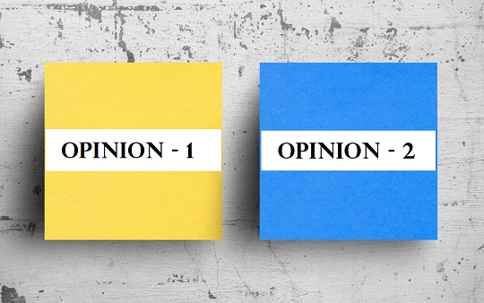

IELTS Writing Task 2: discuss both views + give your opinion
In this guide, you'll learn how to answer IELTS writing task 2 questions that ask you to discuss both points of view before giving your opinion. This type of question is often confused with an agree/disagree question or a give your opinion question. In the latter types of questions, you can choose an opinion and generate your arguments. However, for a discuss both views + give opinion question, you have to discuss both points of view impartially before giving your own view.
In this lesson you will see IELTS writing task 2 sample question + model answer and learn:
- how to impartially discuss the points of view
- how to present your own point of view
- how to give a band 9 answer
IELTS question - discuss both views + give opinion
Let's look at an example of IELTS writing task 2 question that asks you to discuss both views and give your opinion:
You should spend about 40 minutes on this task.
It is commonly believed that nowadays main factors that affect a child's development are media, pop culture and friends. A different point of view is that family plays the most significant role.
Discuss both views and give your opinion.
Write at least 250 words.
Step 1:
Generate arguments for each point of view:
First of all, you have to identify the two opinions. These are:
- External factors have more considerable influence on a child's development.
- The family has a greater influence on a child's development.
Next, let's brainstorm for arguments that support each side:
- External factors have a more considerable influence on a child's development.
- Children tend to copy the behaviour of their favourite fictional characters.
- Children spend a lot of time with their peers.
- Technology has an all-pervasive impact on children.
- The family has a greater influence on a child's development.
- Parents are always present in the life of a child.
- The younger the children are, the more malleable their character is.
- Parents can set boundaries and have more control over their children.
Step 2:
Choose your point of view:
For our essay, we will agree that although external factors influence the development of a child, parents and family still have the upper hand.
Our reason: A child's choice of friends, books or music depends on the values instilled in them by their parents.
Band 9 answer structure for discuss both views + give opinion essay
Though there are many ways to structure your IELTS essay, we’ll use this time-tested band 9 essay structure:
- Introduction
- Body paragraph 1 – discuss the first opinion
- Body paragraph 2 – discuss the second opinion
- Body paragraph 3 – give your own opinion
- Conclusion
Tip: Use linking structures, vocabulary to write essays and some words from academic wordlist.
- Introduction
- Paraphrase the statement (sentences 1 and 2) and give your own opinion (sentence 3):
It is often held that teachers, peers and the media have a significant influence on the life of children. While some people argue that these factors are predominant in shaping a child's future, others believe that parents impact their offspring in more critical ways. This essay will discuss both these points of view and argue in favour of the latter.
- Body paragraph 1
- For this essay, it is good to write three body paragraphs. In the first paragraph, you can dissect the first argument.
On the one hand, the books children read and the music they listen to form their belief system. In other words, children tend to copy the behaviour of their favourite personality or fictional character. Moreover, when little ones work and play in groups, they are influenced by their peers. Finally, other factors, like the media, prompt children to want things regarded as fashionable. For instance, children demand toys that they see on television.
- Body paragraph 2
- In the second paragraph, you can discuss the second point of view.
On the other hand, a child's personality is malleable at a very young age, and parents are always present in their life at this stage. Also, very young children love to imitate. For example, children who come from a dysfunctional family often exhibit behavioural problems at school. An emotionally secure environment at home is critical for the child's confidence. Moreover, parents also teach children about setting boundaries.
- Body paragraph 3
- In the 3rd body paragraph, which is shorter than either of the above, you can give your opinion.
In my opinion, children's choice of friends, books or music depends on the values instilled in them by their parents. Therefore, parents hold more substantial sway over their offspring than media, pop culture and friends circle.
- Conclusion
- In the concluding paragraph, briefly summarise what you have written and restate your opinion:
In conclusion, the outside world influences the intellectual and social development of children. However, I believe that it is parents who set the stage for these developments by laying a strong foundation from a very young age.
Band 9 answer sample
It is often held that teachers, peers and the media have a significant influence on the life of children. While some people argue that these factors are predominant in shaping a child's future, others believe that parents impact their offspring in more critical ways. This essay will discuss both these points of view and argue in favour of the latter.
On the one hand, the books children read and the music they listen to form their belief system. In other words, children tend to copy the behaviour of their favourite personality or fictional character. Moreover, when little ones work and play in groups, they are influenced by their peers. Finally, other factors, like the media, prompt children to want things regarded as fashionable. For instance, children demand toys that they see on television.
On the other hand, a child's personality is malleable at a very young age, and parents are always present in their life at this stage. Also, very young children love to imitate. For example, children who come from a dysfunctional family often exhibit behavioural problems at school. An emotionally secure environment at home is critical for the child's confidence. Moreover, parents also teach children about setting boundaries.
In my opinion, children's choice of friends, books or music depends on the values instilled in them by their parents. Therefore, parents hold more substantial sway over their offspring than media, pop culture and friends circle.
In conclusion, the outside world influences the intellectual and social development of children. However, I believe that it is parents who set the stage for these developments by laying a strong foundation from a very young age.
(273 words)